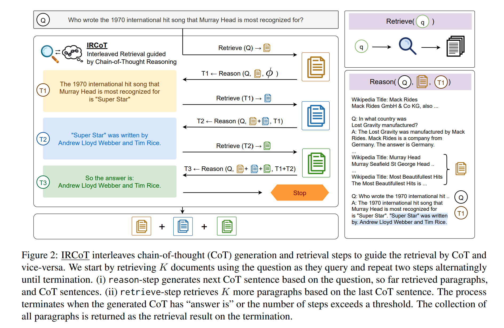
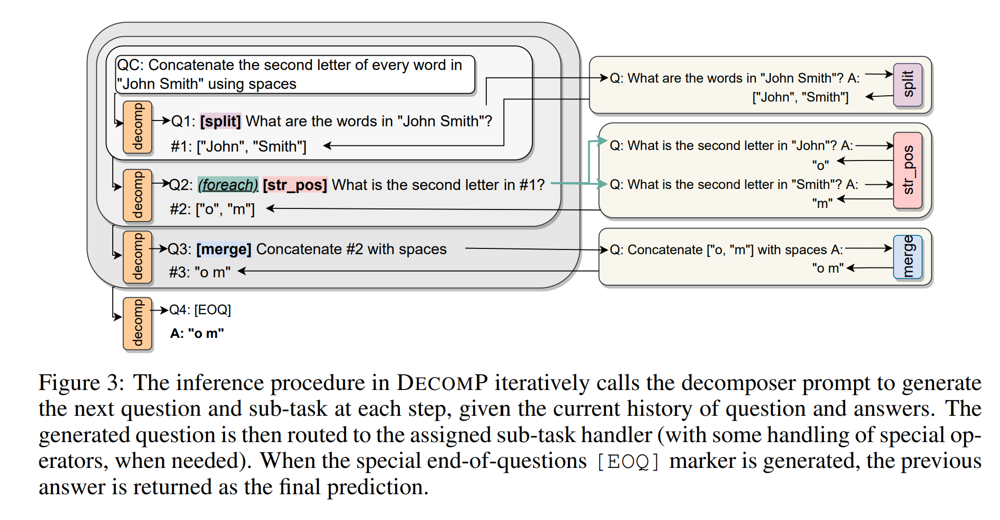
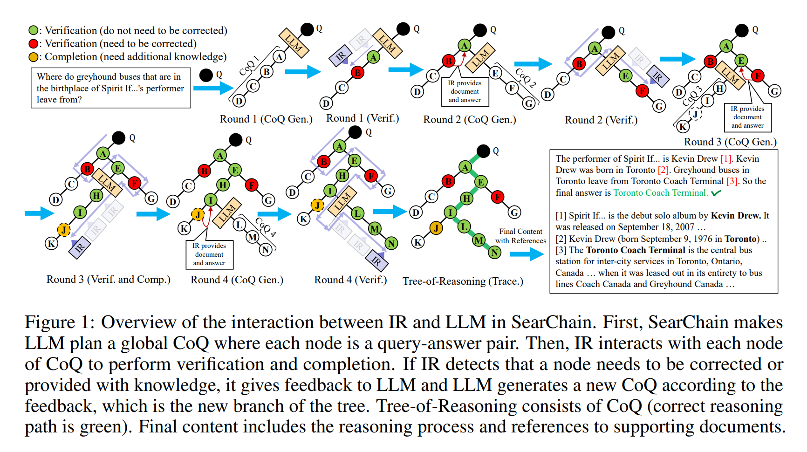
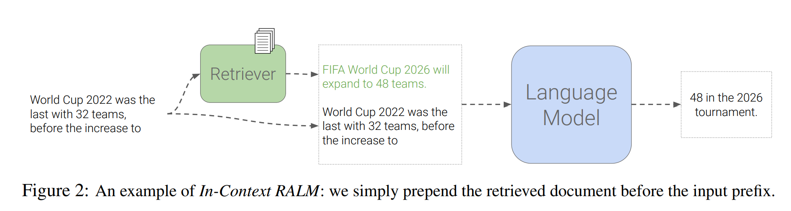

[论文阅读] RALM 1
笔者近期快速刷了几篇与检索增强语言模型 (Retrieval-Augmented Language Modeling) 相关的文章，并自行将其归为了三类。这篇笔记记录的文章大多基于LLM自身的推理能力来对检索方式进行设计。
Investigating the Factual Knowledge Boundary of Large Language Models with Retrieval Augmentation
paper: https://arxiv.org/abs/2307.11019
code: https://github.com/RUCAIBox/LLM-Knowledge-Boundary
Motivation. 目前，领域内缺乏对LLM事实知识边界的深入了解。
内容. 文章回答了如下问题：
-
LLM感知其事实知识边界的能力如何？ LLM对事实知识边界的感知是不准确的，并对自身结果过度自信。
-
检索增强对LLM有什么影响？ LLM不能充分利用它们所拥有的知识，而检索增强可以一定程度上弥补这一缺陷。
-
具有不同特征的辅助文档如何影响LLM？ 提供高质量的辅助文档时，LLM性能更佳且更加自信；LLM倾向于依赖所提供的辅助文档生成反馈。辅助文档与问题的相关性越强，LLM越自信，也更加依赖辅助文档。
思考. 文章发现基于先验判断动态地引入检索能很好地提升性能。即先要求LLM判断它们是否能够提供问题的答案能很好地提升性能，这能给检索增强模型的设计带来启发。
Interleaving Retrieval with Chain-of-Thought Reasoning for Knowledge-Intensive Multi-Step Questions
paper: https://arxiv.org/abs/2212.10509
code: https://github.com/stonybrooknlp/ircot
Motivation. 对于复杂的多步骤推理问题，仅对知识库进行一次检索是不够的。
Framework. IRCoT利用LMs的CoT生成能力来指导检索，并反过来使用检索来改进CoT推理：
首先，将问题作为query检索一组基本段落；然后，交替进行以下两个步骤:
- 扩展CoT: 使用问题、迄今为止收集到的段落和迄今为止生成的CoT句子来生成下一个CoT句子;
- 扩展检索到的信息: 使用最后一个CoT句子作为query来检索其他段落。
重复上述步骤，直到CoT报告答案，或达到所允许的最大推理步骤数。终止时，将所有收集到的段落作为检索结果返回。
Active Retrieval Augmented Generation
paper: https://arxiv.org/abs/2305.06983
code: https://github.com/jzbjyb/FLARE
Motivation. 1、大多现有的检索增强LLMs仅根据输入检索一次信息，但在涉及生成长文本的更一般的场景中，在生成过程中不断收集信息是必不可少的。2、过去尝试在生成输出时进行多次检索的工作主要以固定的间隔使用前面的文本作为query。
Framework. 文章提出的FLARE能在整个生成过程中主动决定何时检索和检索什么，并给出了和两种方法。
-
: 提示LM在必要时生成retrieval queries，同时使用retrieval-encouraging指令生成回答: 让LM在需要额外信息时生成“[Search(query)]”。但可能会出现以下问题：
- LMs产生的search queries比需要的少：对token “[” 的logit加上2.0来解决。
- 生成过多的search queries可能会破坏答案的生成、对性能产生影响：用search queries检索相关信息时，及时将“[Search(query)]”从生成中删除，并向“[” 的logit添加一个大的负值来禁止“[” 。
-
: 直接使用LM的生成作为queries。由两部分组成：
-
基于置信度的主动检索：令为LM在第t步临时生成的句子、为阈值，当中有token的概率小于时，则触发检索；
-
基于置信度的query表示：给出了两种query表示方法：1) Masked sentences作为隐式query：mask概率低于置信度的tokens；2) 生成问题作为显示query：提取概率低于置信度的所有区间，对于每个提取的区间z，提示gpt-3.5-turbo生成一个问题，这个问题可以用z来回答。

-
Decomposed Prompting: A Modular Approach for Solving Complex Tasks
paper: https://arxiv.org/abs/2210.02406
code: https://github.com/allenai/DecomP
Motivation. Few-shot prompting是使用LLMs解决各种任务的一种强大方法，但当任务的复杂性增加或任务本身的单个推理步骤难以学习时，这种方法就会出现问题。
Method. 如图，将复杂问题提供给decomposer prompt以获得第一个子问题Q1，并将其提供给split prompt，由这个prompt生成的答案随后被附加到decomposer prompt中，以获得第二个子问题Q2，因为该问题中含有foreach操作符，所以会生成两个问题，并将它们提供给str_pos prompt以得到关于两个回答的数组，这用于生成第三个子问题Q3，并提供给merge prompt以获得最终答案。因为问题已经被解决，所以decomposer prompt会产生结束标记[EOQ]并将前一个回答作为最终答案返回。
Search-in-the-Chain: Towards Accurate, Credible and Traceable Large Language Models for Knowledge-intensive Tasks
paper: https://arxiv.org/abs/2304.14732v6
code: https://github.com/xsc1234/Search-in-the-Chain
Motivation. 之前的工作存在着由IR检索到错误的知识对LLM产生误导或破坏LLM推理链的缺点。此外，以前的方法假设推理链中生成的答案总是正确的，不能在必要时及时修改推理方向。
Framework. SearChain关注推理链的全局规划：
首先，让LLM构建一个全局推理链C，其中每个节点是一个query-answer对，如果对于某个节点，LLM不知道答案，则将query标记为[Unsolved Query]. 在每一轮交互中，IR对C上每个节点的信息进行验证和补全，直到C上所有query都不需要更正或达到最大交互轮数时结束。
验证：如果与检索到的文档信息不一致，则构建一个prompt帮助LLM更正得到，并生成一个以为根节点的推理链CoQ.
补全：对于被标记为[Unsolved Query]的query , 为检索到的文档，为从文档中提取到的答案，和将以prompt的形式反馈给LLM，LLM收到反馈给出答案，并生成一个以为根节点的推理链CoQ.
In-Context Retrieval-Augmented Language Models
paper: https://arxiv.org/abs/2302.00083
code: https://github.com/AI21Labs/in-context-ralm
内容. 论文提出In-Context RALM。论文还针对 (1) 哪种现成检索器最适合语言建模；(2) 检索操作的频率；(3) 最佳的query长度 进行了分析，并引入了两种重排方法。
